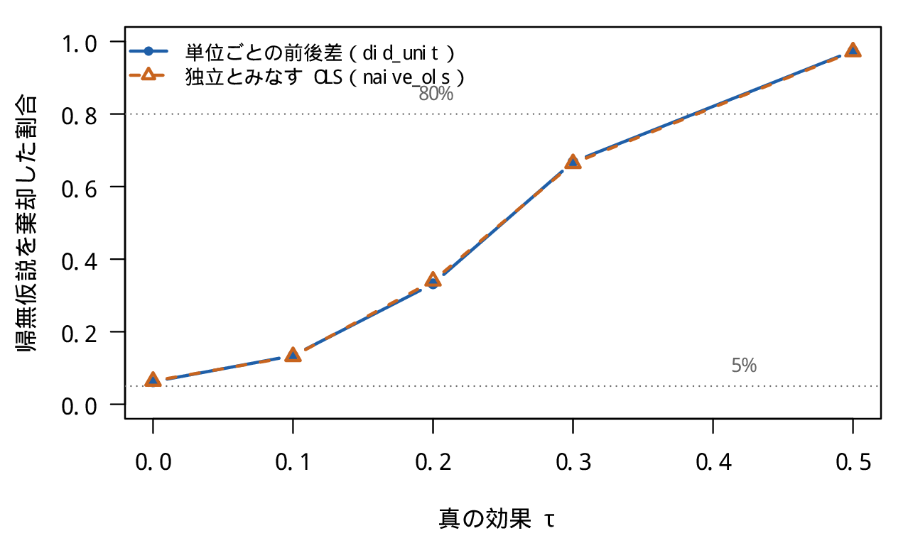

動作見本：系列相関のあるパネルで、単純な差の差は偽陽性率を保つが、効果0.3は検出できない
これはラボの仕組みを見せるための見本であり、データはすべて合成である。 200単位×10期の合成パネルで、差の差の手続きを2通り点検した。 真の効果が0のときの棄却率は、単位ごとの前後差で6.2%、観測を独立とみなす OLS で6.4%だった（各500回）。 「独立とみなす OLS は偽陽性が増える」という事前の予想（H2）は、この設定では外れた。 効果0.3での検出力は66.8%で、80%に届かなかった。
3行でいうと
- 背景：分析コードを実データに当てる前に、答えの分かっている合成データで手続きを確かめる（段階6）。
- 仮説：H1 偽陽性率は保たれる、H2 独立とみなすと偽陽性が増える、H3 効果0.3を検出できる。
- 現状：H1 支持、H2 棄却、H3 棄却。未ロック。結果はすべて合成データの区分である。
1 背景と問い
差の差では、同じ単位を何期も観測する。誤差が時間を通じて相関していると、観測を独立とみなした標準誤差は信用できない場合がある。 どの程度ずれるかは、設定（期の数、処置の時点、相関の強さ）に依存する。 だから、自分のデータと同じ構造の合成データで確かめる。
偽陽性率は、真の効果が0なのに「効果あり」と判定する割合である。5%水準の検定なら5%が目標になる。 検出力は、真の効果があるときに「効果あり」と判定できる割合である。80%を目安にすることが多い。
2 先行研究
見本なので、文献調査はしていない。実プロジェクトでは、ここに転換点の論文5〜10本の表を置く。 関連する方法論の文献として、事前に決めることの利点と限界（Olken, 2015）、 検定を通過した後の推定の歪み（Roth, 2022）、仕様を網羅して示す方法（Simonsohn et al., 2020）、 有意な結果への偏りの実態（Brodeur et al., 2020）がある。
3 研究仮説
仮説：真の効果が0のとき、5%水準の検定が棄却する割合は3〜7%に収まる。
成功基準：棄却率が0.03以上0.07以下（500回での標準誤差は約0.01）。
棄却条件：棄却率が0.03未満または0.07超。
状態：支持（2026-11-14）。ただし基準は結果を見た後に書いた。
仮説：真の効果が0のとき、棄却率は7%を超える。
根拠：系列相関があると標準誤差が小さくなりすぎる、という筆者の事前の予想。
成功基準：棄却率が0.07超。 棄却条件：棄却率が0.07以下。
状態：棄却（2026-11-14）。この仮説だけが、結果を見る前に立てたものである。
仮説：真の効果0.3での棄却率は80%以上になる。
成功基準：棄却率が0.80以上。 棄却条件：棄却率が0.80未満。
状態：棄却（2026-11-14）。基準は結果を見た後に書いた。
4 データ
合成パネルを sim/mc_check.R で生成する。単位は200、期は10、第6期から処置、処置群は半数である。
結果変数は式\(\ref{eq:demo-dgp}\)で作る。乱数の種は20261114である。
\(\alpha_i\) は標準偏差1の単位固定効果、\(\varepsilon_{it}\) は標準偏差1の誤差、\(D_{it}\) は処置群の処置後で1をとる。 真の効果 \(\tau\) は0、0.1、0.2、0.3、0.5の5通りを試す。
5 識別戦略と推定
単位ごとの前後差（did_unit）：単位ごとに「処置後の平均−処置前の平均」を取り、処置群と対照群の平均の差を推定値とする。標準誤差は単位を独立とみなして計算する。
独立とみなす OLS（naive_ols）：単位×期の2000観測に、処置群・処置後・交差項を入れた OLS を当て、通常の標準誤差を使う。
評価：各設定で500回くり返し、偏り・95%信頼区間の被覆率・棄却率を測る。
推論：棄却率0.05のモンテカルロ標準誤差は \(\sqrt{0.05\times0.95/500}\approx0.01\) である。
6 予想される結果
シミュレーションの前に筆者が予想していたのは、H2（独立とみなす OLS の棄却率が7%を超える）だけである。 H1 と H3 の数値基準は、結果を見た後に書いた。したがって、確証と呼べるのは H2 の判定だけである。
7 結果
何をした：真の効果0で500回。
何が分かった：棄却率は did_unit で0.062、naive_ols で0.064。被覆率は0.938と0.936（表1）。
判定：H1 は支持（0.03〜0.07の範囲内）。H2 は棄却（0.07を超えなかった）。
何をした：真の効果0.3で500回。
何が分かった：did_unit の棄却率は0.668。効果0.5では0.974（図1）。
判定：H3 は棄却。検出力80%に届く効果は0.3と0.5の間にある。
data/sim/mc_summary.csv。| 真の効果 | 手続き | 偏り | 標準誤差の平均 | 被覆率 | 棄却率 |
|---|---|---|---|---|---|
| 0 | did_unit | 0.0005 | 0.1255 | 0.938 | 0.062 |
| 0 | naive_ols | 0.0005 | 0.1260 | 0.936 | 0.064 |
| 0.1 | did_unit | 0.0045 | 0.1259 | 0.938 | 0.134 |
| 0.2 | did_unit | \(-0.0032\) | 0.1254 | 0.958 | 0.332 |
| 0.3 | did_unit | \(-0.0046\) | 0.1256 | 0.948 | 0.668 |
| 0.5 | did_unit | \(-0.0045\) | 0.1257 | 0.952 | 0.974 |

data/sim/mc_summary.csv、作図は code/02_figs.R。8 考察
H2 が外れた理由は、設定にあると考えられる（筆者の見解、未検証）。 この設定では、処置前と処置後が5期ずつで、処置群と対照群が同数である。 単位固定効果は前後差で消え、系列相関は前後の平均の差のばらつきを小さくする方向に働く。 2つの効果が打ち消し合い、独立とみなした標準誤差がたまたま合った可能性がある。 期の数や相関の強さを変えれば、結論は変わりうる。
「この設定で問題が出なかった」は、「この手続きは安全だ」を意味しない。
確かめたのは1つの設定だけである。自分のデータの構造に合わせて PARAMS を書き換え、もう一度測る必要がある。
9 判断と次の一手
結論：見本として完了。研究としては進めない。
理由：仕組み（仮説の箱、結果の箱、仕様の記録、R と Python の照合）が端から端まで動くことを確かめるのが目的だった。
次の一手：実プロジェクトでは _template をコピーし、段階4の終わりに人が承認してロックする。
更新履歴
- 2026-11-14：作成。H2 は事前の予想、H1 と H3 の基準は結果を見た後に追加。
参考文献
- Brodeur, Abel, Cook, Nikolai, Heyes, Anthony（2020）「Methods Matter: p-Hacking and Publication Bias in Causal Analysis in Economics」American Economic Review 110 (11) 3634–3660 doi:10.1257/aer.20190687 PDF
- Olken, Benjamin A.（2015）「Promises and Perils of Pre-analysis Plans」Journal of Economic Perspectives 29 (3) 61–80 doi:10.1257/jep.29.3.61 PDF
- Roth, Jonathan（2022）「Pretest with Caution: Event-Study Estimates after Testing for Parallel Trends」American Economic Review: Insights 4 (3) 305–322 doi:10.1257/aeri.20210236
- Simonsohn, Uri, Simmons, Joseph P., Nelson, Leif D.（2020）「Specification curve analysis」Nature Human Behaviour 4 (11) 1208–1214 doi:10.1038/s41562-020-0912-z